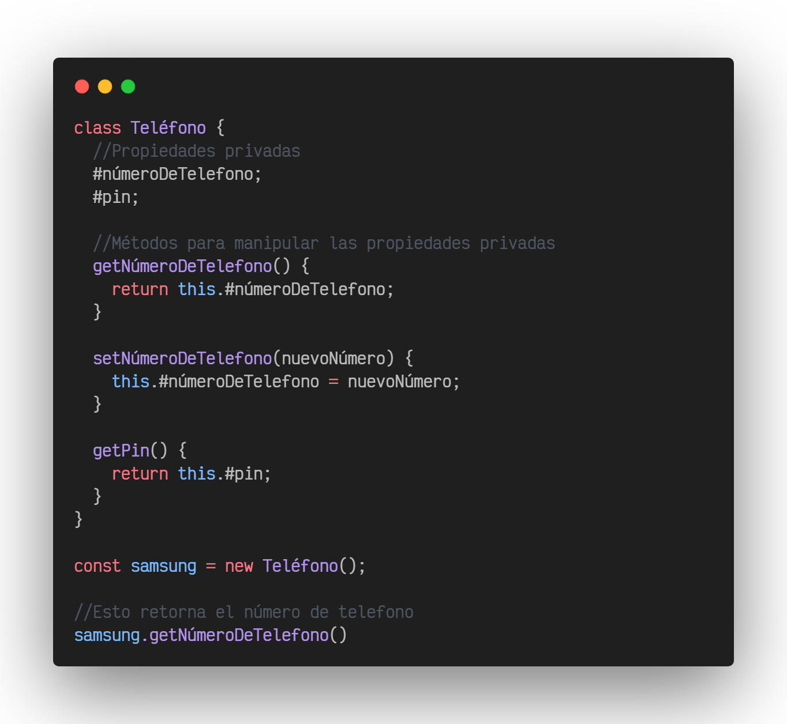

El encapsulamiento en la programación orientada a objetos consiste en
la ocultación y aislamiento de un objeto hacia el exterior, esto
resultará en que los datos (atributos) del objeto sólo puedan ser
gestionados mediante métodos definidos de este mismo.
Para la manipulación de un objeto encapsulado se haría uso de setters
y getters para modificar y obtener respectivamente los atributos de un
objeto.
Ejemplo de encapsulamiento en javascript:

Podemos decir que encapsulamiento es una forma de ocultación de
información entre entidades, mostrándose entre ellas solo la
información más necesaria.